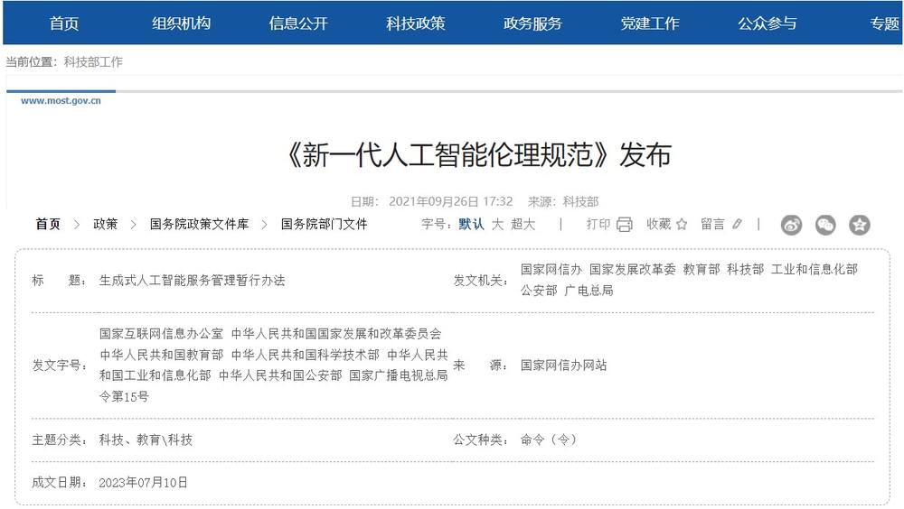
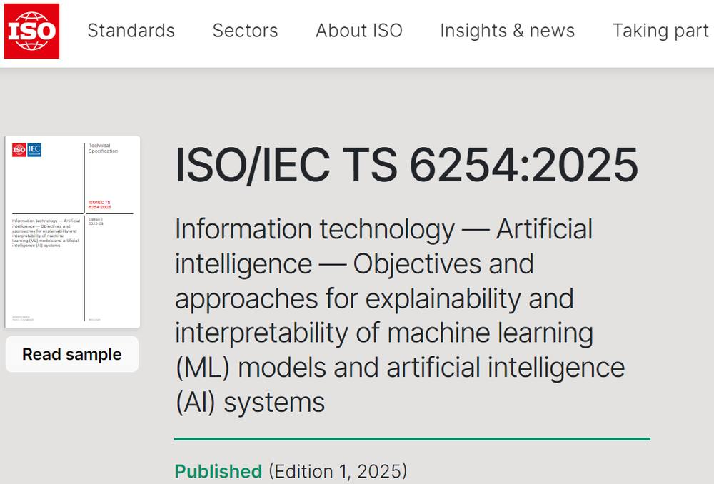
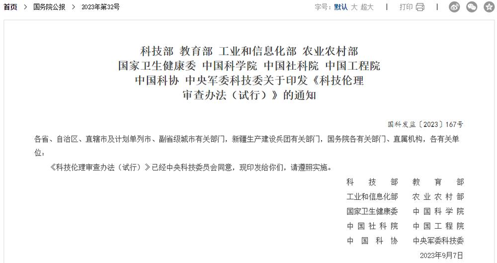

第 1 页 · 2 人工智能伦理治理
2 人工智能伦理治理

模块7：遵守人工智能伦理规范


第 2 页 · 伦理治理不仅是应对风险的手段，更是保障AI技术始终服务于人类福祉的关键基石。
伦理治理不仅是应对风险的手段，更是保障AI技术始终服务于人类福祉的关键基石。

当数据隐私泄露、算法偏见歧视、AI决策“黑箱”等伦理问题逐渐从潜在风险变为现实危害，如何通过系统性治理为人工智能“立规矩、划边界“？
第 3 页 · 一、新一代人工智能伦理治理
一、新一代人工智能伦理治理
伦理治理的本质
并非对技术创新的限制，而是通过明确价值导向与行为规范，确立技术发展的伦理底线，让AI始终服务于人类共同利益，实现创新与责任的平衡统一。
治理的核心目标
构建多层次、多维度的人工智能伦理治理规范体系，推动治理模式从单纯的原则倡导走向刚性的制度约束，形成政府、企业、社会协同共治的长效机制。
第 4 页 · 一、新一代人工智能伦理治理
一、新一代人工智能伦理治理
尊重人类
公正性
可解释性
可追溯性
负责任
伦理治理核心原则
第 5 页 · 一、新一代人工智能伦理治理
一、新一代人工智能伦理治理
原则一：尊重人类 —— 守护技术的“人本底色”
保护权益为核心
严禁任何侵犯个人隐私、损害生命安全的行为，将人类基本权利与安全置于技术发展之上，筑牢伦理防线。
严守知情同意原则
数据采集遵循“合法、正当、必要”准则，杜绝“无感采集”与“越界收集”，确保用户充分知晓并自愿授权数据使用。
保障用户自主控制
赋予用户数据使用的知情权与控制权，支持自主选择数据是否用于模型训练、是否接受个性化算法推荐等关键决策。
核心目标：防止技术异化为侵犯人类权益的工具，始终确保AI的技术逻辑服从人类的价值逻辑，让智能技术真正服务于人、造福于人。
第 6 页 · 一、新一代人工智能伦理治理
一、新一代人工智能伦理治理
原则二：公正性 —— 消除算法的“隐性歧视”

核心目标： 打破“历史偏见固化为算法歧视”的恶性循环，主动干预并修正算法中的不公因子，让人工智能从社会偏见的“放大器”转变为促进社会公平、缩小群体差距的重要工具。
数据公平：构建多元无偏的样本基座
训练数据需充分覆盖不同年龄、性别、地域、文化背景的多元群体，避免因样本采集失衡、代表性不足而导致的结构性偏见，从源头筑牢算法公平的基础。
决策公平：剔除歧视性的特征变量
算法模型设计需严格剔除性别、种族、户籍、宗教等可能引发歧视的敏感特征，建立公平性校验机制，确保不同群体在就业、教育、金融等AI服务场景中获得平等的对待与机会。
第 7 页 · 一、新一代人工智能伦理治理
一、新一代人工智能伦理治理
原则三：可解释性 —— 破解“黑箱困境”

核心价值：让AI从“不可知”走向“可知”，从“不可控”走向“可控”，构建人机互信的智能生态。

理解与验证
针对医疗、司法等关键领域，需采用“白盒算法”或“黑盒+解释模块”的架构设计，让系统逻辑清晰可见，便于专业人员核验。
明确决策依据
以可理解的方式向用户阐明“决策依据是什么”“为什么给出该结果”，拒绝模糊的自动化结论，保障用户对结果的知情权与质疑权。

筑牢责任基石
为算法缺陷的修正、决策失误的责任界定提供技术前提，建立“可问责”的算法治理闭环，避免因“黑箱”导致的责任推诿。
第 8 页 · 一、新一代人工智能伦理治理
一、新一代人工智能伦理治理
原则四：可追溯性 —— 明确责任的“追踪链条”

核心要求：全流程数据留痕
完整记录输入信息、模型参数配置、中间运算逻辑及输出结果等全链路数据，确保数据真实、不可篡改，为后续回溯提供完整的原始依据。
关键能力：事故场景责任还原
当系统出现故障或引发事故时，可通过追溯系统记录，复现算法决策的每一步逻辑，精准判断是技术缺陷、数据偏差，还是外部环境或人为操作的问题。
核心目标：构建“事后兜底机制”解决“谁为智能决策买单”的核心问题，例如在自动驾驶事故中，通过追溯明确责任主体，让算法决策不再是“黑箱”，为司法判定和责任划分提供可采信的技术证据。
第 9 页 · 一、新一代人工智能伦理治理
一、新一代人工智能伦理治理
原则五：负责任 —— 筑牢技术的“安全防线”

核心目标：推动AI发展逻辑实现根本性转变，从单一追求“技术效益”的片面导向，转向“兼顾社会成本与公共福祉”的综合价值导向，实现技术进步与社会可持续发展的良性互动。
核心一：夯实技术责任基石
AI系统需经过全场景、高强度的安全测试与漏洞排查，从算法设计到部署运维形成闭环，避免因技术缺陷引发数据泄露、决策失误等安全事故，保障系统基础的可靠性。
核心二：扛起社会影响责任
主动评估AI对就业结构、社会关系、伦理规范的长期影响，预判技术应用可能带来的社会风险，并配套制定职业培训、权益保障等社会支持措施，让技术发展惠及更广泛的群体。
第 10 页 · 一、新一代人工智能伦理治理
一、新一代人工智能伦理治理
应对伦理问题的策略
第 11 页 · 一、新一代人工智能伦理治理
一、新一代人工智能伦理治理
策略一：制定和执行相关法规与政策

我国政府发布的人工智能伦理相关政策文件
法律法规与政策的作用：
法规可以界定伦理违规行为的法律责任，例如对未经授权采集数据的企业处以罚款，对滥用AI实施诈骗的个人追究刑事责任；
政策可以引导AI的发展方向，例如通过财政补贴支持“公平性算法”的研发，通过准入限制规范高风险AI的应用。
第 12 页 · 一、新一代人工智能伦理治理
一、新一代人工智能伦理治理
策略二：提高AI技术的透明度和可解释性
全球首个AI可解释性国际标准
主要手段：
公开关键信息：明确要求企业披露AI系统的核心原理、训练数据来源及关键决策指标，让算法规则不再处于“不可见”状态，保障用户的知情权。
研发可解释AI (XAI) 技术：利用可视化工具拆解算法决策路径，让复杂的模型输出转化为人类可理解的逻辑，实现从“黑箱”到“白盒”的技术突破。

第 13 页 · 一、新一代人工智能伦理治理
一、新一代人工智能伦理治理
策略三：建立AI伦理审查机制
科技伦理审查办法（试行）的政府发文
核心逻辑：构建多方参与的协同评估体系
打破单一主体的局限性，审查主体涵盖技术专家、伦理学家、法律学者及社会公众代表，实现技术可行性与伦理正当性、社会包容性的统一研判，确保评估视角的全面性与公正性。
企业维度：建立内部治理架构
行业维度：搭建公共服务平台
政府维度：强化法规制度约束

第 14 页 · 一、新一代人工智能伦理治理
一、新一代人工智能伦理治理
策略四：提高公众对AI伦理问题的认识和意识
认知筑基：全龄段教育普及行动
高校与基础教育双向发力：国内多所高校已将“人工智能伦理”纳入通识课程体系；教育部同步发布《中小学人工智能通识教育指南（2025年版）》，让AI伦理意识从青少年抓起，筑牢社会认知根基。

监督护航：社会共治与政府整治并重
舆论监督与专项行动结合：一方面通过社会舆论曝光AI歧视、滥用等不良案例，形成民间监督力量；另一方面，中央网信办将“整治AI技术滥用乱象”纳入2025年“清朗”系列重点任务，以行政力量强化行业规范。
核心价值：让公众从“被动接受”转向“主动参与”，构建政府引导、社会协同、公众参与的多元共治AI伦理治理新格局。
第 15 页 · 一、新一代人工智能伦理治理
一、新一代人工智能伦理治理
策略五：加强国际合作和交流

分享治理经验
通过多边对话机制分享各国AI治理的实践案例与政策成果，减少不同司法辖区间的政策差异，为企业提供清晰、一致的合规指引。
统一行业标准
推动国际社会协同制定AI研发、应用的通用伦理准则与技术标准，避免企业在跨国运营中陷入“规则冲突”的困境，降低合规成本。
深化跨境协作
建立跨国执法与监管协作机制，共同打击利用AI技术实施的网络诈骗、数据窃取等跨国犯罪行为，维护全球数字空间的安全与秩序。
搭建全球交流平台：世界人工智能大会、全球AI伦理峰会等成为各国政府、学界与产业界对话的重要桥梁。
组建企业自律联盟：百度、微软、谷歌等科技巨头成立“全球AI联盟”，携手制定行业伦理规范，推动技术向善的实践落地。
第 16 页 · 二、人工智能职业道德基本要求
二、人工智能职业道德基本要求
Nature子刊报道AI驱动的可穿戴助盲系统
第 17 页 · 二、人工智能职业道德基本要求
二、人工智能职业道德基本要求
“三位一体”履行AI伦理的社会责任
保证AI透明可解释的技术路线
第 18 页 · 研讨AI治理的应用场景
研讨AI治理的应用场景

| 应用场景 | 潜在的伦理风险 | 可能的负面影响 | 你的治理与改进建议 |
| 示例：AI 招聘 | 算法偏见（如性别、年龄、院校歧视） | 就业不公，固化社会偏见，损害求职者权益 | 审查训练数据，剔除歧视性特征；采用可解释 AI，公开决策依据；建立第三方评估机制。 |
| AI 内容生成（AIGC） | |||
| 智能驾驶 | |||
| AI 美颜 / 换脸 | |||
| AI 医疗诊断 | |||
| …… |
第 19 页 · 学生分享及教师点评
学生分享及教师点评

| 评价要点 | 分值 | 计分 | 小组/教师点评 |
| 1、应用场景的真实性 | 20 | 场景贴合真实生活和社会 | |
| 2、潜在伦理风险的准确性 | 15 | 找准风险点，有理有据 | |
| 3、列举负面影响的完备性 | 15 | 确实存在，抓住要点 | |
| 4、治理与改进建议的可行性 | 30 | 集思广益、团结协作 | |
| 5、分享表达的清晰度与逻辑性 | 10 | 分享逻辑清晰，重点突出 | |
| 6、其它（含逻辑、表情、主动、清晰、流畅、自信等） | 10 | 积极互动，表达流畅，自信开朗 |
第 20 页 · 子任务3：语音提示处理
子任务3：语音提示处理

增强伦理意识
践行职业担当